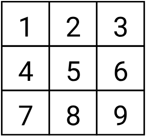
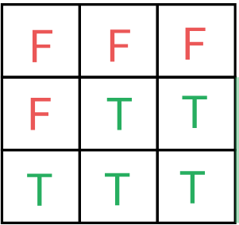
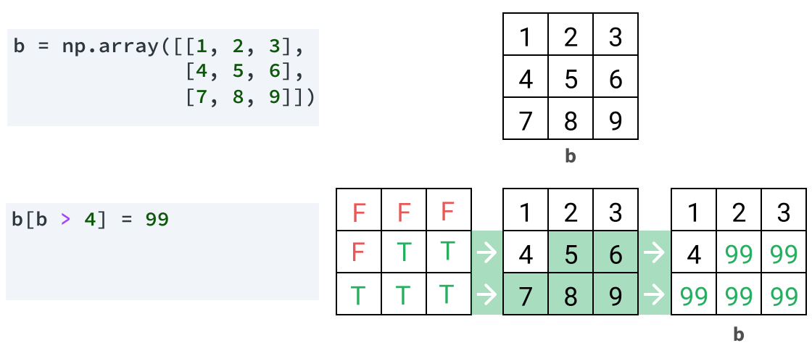
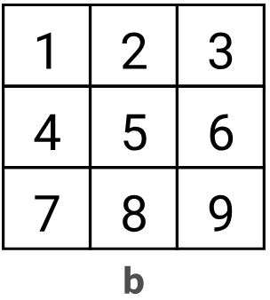

b = np.array([
[1, 2, 3],
[4, 5, 6],
[7, 8, 9]
])Séance 5 — Fonctionnalités avancées de NumPy et découverte de pandas
Introduction à Python · L3 Économie-Gestion
Objectifs
- Savoir utiliser le Boolean indexing avec NumPy
- Comprendre les deux objets clés de pandas : la Series et le DataFrame
- Lire un fichier CSV avec pandas
- Analyser les attributs d’un DataFrame
- Dans un DataFrame, sélectionner et modifier des données
NumPy : sélectionner des données selon des critères
Un exemple
On sait sélectionner des éléments tableau selon leur position.
❓ Comment sélectionner des élements selon leur valeur ? Par exemple, comment sélectionner tous les éléments supérieurs à 4 ?
💡 Il faudrait pouvoir tester chacune des valeurs : “valeur > 4” ?
Tester toutes les valeurs d’un coup
Numpy intègre ce type de test :
Illustration :
b :
b > 4 :
C’est comme si NumPy avait bouclé sur chacune des valeurs pour la tester individuellement. (mais en réalité NumPy le fait beaucoup plus rapidement qu’avec une boucle)
Filtrer un array avec un masque booléen 🤯
Le résultat de b > 4 est comme un masque, que l’on peut utiliser dans des crochets pour sélectionner des données : cela s’appelle le boolean indexing.
Modifier un array avec le boolean indexing
On utilise souvent cette méthode pour modifier plusieurs valeurs à la fois selon un critère donné.

Combiner plusieurs conditions
On peut combiner plusieurs tests avec :
- l’opérateur
|(ou), - l’opérateur
&(et), - l’opérateur
~(non), - les parenthèses.

Le package pandas
Présentation
- package de référence pour l’analyse de données
- construit “par dessus” NumPy et reprend sa logique
- dédié à la manipulation des tableaux (dimension 2)
Importer pandas
En général, on importe à la fois NumPy et pandas :
Les concepts-clés de pandas
pandas introduit 2 types de données :
Series: objet de dimension 1DataFrame: objet de dimension 2
Le type Series
C’est un objet de dimension 1. On peut le voir comme une colonne d’un tableau.
- à la création, une
Seriespossède unnamequi désigne tout le contenu - dans une
Series, chaque valeur est associée à unindex
Création à partir d’une liste de valeurs et des index
France 68.4
Germany 84.5
Italy 58.9
Name: population, dtype: float64Le type DataFrame
C’est un objet de dimension 2. On peut le voir comme un tableau qui comporte plusieurs colonnes.
- Chaque colonne possède un
index - Chaque ligne possède un
index
Un DataFrame peut être vu comme un Dictionnaire de Series :
Explorer un DataFrame
Charger un DataFrame depuis un fichier
pandas peut importer et exporter des donnes depuis et vers la plupart des formats courants.
Souvent, on utilisera le format csv (ou le format Excel).
Charger un DataFrame depuis un csv
Pour l’exemple, basons-nous sur ce fichier .csv. On le télécharge et le range dans le dossier du Notebook, puis on l’importe avec pandas :
| country | iso3 ode | name_local | capital | region | subregion | currency | calling_code | flag emoji | population | area (km2) | |
|---|---|---|---|---|---|---|---|---|---|---|---|
| 0 | Afghanistan | AFG | افغانستان | Kabul | Asia | Southern Asia | AFN | 93 | 🇦🇫 | 42647492 | 42647492.0 |
| 1 | Aland Islands | ALA | Åland | Mariehamn | Europe | Northern Europe | EUR | 358 | 🇦🇽 | 26711 | 26711.0 |
| 2 | Albania | ALB | Shqipëria | Tirana | Europe | Southeast Europe | ALL | 355 | 🇦🇱 | 2377128 | 2377128.0 |
| 3 | Algeria | DZA | الجزائر | Algiers | Africa | Northern Africa | DZD | 213 | 🇩🇿 | 46814308 | 46814308.0 |
| 4 | American Samoa | ASM | NaN | Pago Pago | Oceania | Polynesia | USD | 1 | 🇦🇸 | 46765 | 46765.0 |
| ... | ... | ... | ... | ... | ... | ... | ... | ... | ... | ... | ... |
| 245 | Wallis and Futuna | WLF | Wallis et Futuna | Mata Utu | Oceania | Polynesia | XPF | 681 | 🇼🇫 | 16025 | 16025.0 |
| 246 | Western Sahara | ESH | الصحراء الغربية | El-Aaiun | Africa | Northern Africa | MAD | 212 | 🇪🇭 | 273008 | 273008.0 |
| 247 | Yemen | YEM | اليَمَن | Sanaa | Asia | Western Asia | YER | 967 | 🇾🇪 | 40583164 | 40583164.0 |
| 248 | Zambia | ZMB | NaN | Lusaka | Africa | Eastern Africa | ZMW | 260 | 🇿🇲 | 21314956 | 21314956.0 |
| 249 | Zimbabwe | ZWE | NaN | Harare | Africa | Eastern Africa | ZWL | 263 | 🇿🇼 | 16634373 | 16634373.0 |
250 rows × 11 columns
Les reflexes pour explorer rapidement un DataFrame
On stocke le DatafFrame dans une variable.
☝️ il est conseillé de préciser les arguments:
delimiter: le séparateur de colonnes (en général,ou;)decimal: le séparateur de décimales (en général.ou,)
sinon pandas tente de les déduire tout seul.
Combien de lignes et de colonnes ?
A quoi ressemblent les premières lignes ?
| country | iso3 ode | name_local | capital | region | subregion | currency | calling_code | flag emoji | population | area (km2) | |
|---|---|---|---|---|---|---|---|---|---|---|---|
| 0 | Afghanistan | AFG | افغانستان | Kabul | Asia | Southern Asia | AFN | 93 | 🇦🇫 | 42647492 | 42647492.0 |
| 1 | Aland Islands | ALA | Åland | Mariehamn | Europe | Northern Europe | EUR | 358 | 🇦🇽 | 26711 | 26711.0 |
| 2 | Albania | ALB | Shqipëria | Tirana | Europe | Southeast Europe | ALL | 355 | 🇦🇱 | 2377128 | 2377128.0 |
Quelles sont les colonnes ?
Un aperçu global ?
<class 'pandas.DataFrame'>
RangeIndex: 250 entries, 0 to 249
Data columns (total 11 columns):
# Column Non-Null Count Dtype
--- ------ -------------- -----
0 country 250 non-null str
1 iso3 ode 250 non-null str
2 name_local 137 non-null str
3 capital 244 non-null str
4 region 250 non-null str
5 subregion 250 non-null str
6 currency 250 non-null str
7 calling_code 250 non-null int64
8 flag emoji 249 non-null str
9 population 250 non-null int64
10 area (km2) 250 non-null float64
dtypes: float64(1), int64(2), str(8)
memory usage: 21.6 KBDes statistiques rapides ?
| calling_code | population | area (km2) | |
|---|---|---|---|
| count | 250.000000 | 2.500000e+02 | 2.500000e+02 |
| mean | 359.616000 | 3.257564e+07 | 3.257564e+07 |
| std | 316.293222 | 1.336172e+08 | 1.336172e+08 |
| min | 1.000000 | 0.000000e+00 | 0.000000e+00 |
| 25% | 62.250000 | 2.011342e+05 | 2.011342e+05 |
| 50% | 262.000000 | 5.225466e+06 | 5.225466e+06 |
| 75% | 592.750000 | 2.113436e+07 | 2.113436e+07 |
| max | 1721.000000 | 1.450936e+09 | 1.450936e+09 |
Exemple d’interprétation ici : Un quart (25%) des pays du tableau ont une surface inférieure à 201 134 km2 (=2.011342e+05=\(2,011342\times 10^5\)).
Sélectionner les données d’un DataFrame
Les index dans pandas
- les index de colonnes sont donnés par
df.columnset correspondent aux noms de colonnes ; - les index de lignes sont donnés par
df.index. Par défaut, pandas numérote les lignes à partir de 0 (comme NumPy).
On peut aussi définir des index de lignes personnalisés :
| iso3 ode | name_local | capital | region | subregion | currency | calling_code | flag emoji | population | area (km2) | |
|---|---|---|---|---|---|---|---|---|---|---|
| country | ||||||||||
| Afghanistan | AFG | افغانستان | Kabul | Asia | Southern Asia | AFN | 93 | 🇦🇫 | 42647492 | 42647492.0 |
| Aland Islands | ALA | Åland | Mariehamn | Europe | Northern Europe | EUR | 358 | 🇦🇽 | 26711 | 26711.0 |
| Albania | ALB | Shqipëria | Tirana | Europe | Southeast Europe | ALL | 355 | 🇦🇱 | 2377128 | 2377128.0 |
| Algeria | DZA | الجزائر | Algiers | Africa | Northern Africa | DZD | 213 | 🇩🇿 | 46814308 | 46814308.0 |
| American Samoa | ASM | NaN | Pago Pago | Oceania | Polynesia | USD | 1 | 🇦🇸 | 46765 | 46765.0 |
Sélectionner une colonne
country
Afghanistan 42647492
Aland Islands 26711
Albania 2377128
Algeria 46814308
American Samoa 46765
...
Wallis and Futuna 16025
Western Sahara 273008
Yemen 40583164
Zambia 21314956
Zimbabwe 16634373
Name: population, Length: 250, dtype: int64⚠️ Cela retourne une Series (objet en 1 dimension).
Sélectionner plusieurs colonnes
| population | region | currency | |
|---|---|---|---|
| country | |||
| Afghanistan | 42647492 | Asia | AFN |
| Aland Islands | 26711 | Europe | EUR |
| Albania | 2377128 | Europe | ALL |
| Algeria | 46814308 | Africa | DZD |
| American Samoa | 46765 | Oceania | USD |
| ... | ... | ... | ... |
| Wallis and Futuna | 16025 | Oceania | XPF |
| Western Sahara | 273008 | Africa | MAD |
| Yemen | 40583164 | Asia | YER |
| Zambia | 21314956 | Africa | ZMW |
| Zimbabwe | 16634373 | Africa | ZWL |
250 rows × 3 columns
⚠️ Cela retournne un DataFrame (objet en 2 dimensions).
Sélectionner une ou plusieurs lignes
On utilise .loc[<slicer de ligne>] :
| iso3 ode | name_local | capital | region | subregion | currency | calling_code | flag emoji | population | area (km2) | |
|---|---|---|---|---|---|---|---|---|---|---|
| country | ||||||||||
| France | FRA | NaN | Paris | Europe | Western Europe | EUR | 33 | 🇫🇷 | 68551653 | 68551653.0 |
| French Guiana | GUF | Guyane française | Cayenne | Americas | South America | EUR | 594 | 🇬🇫 | 195506 | 195506.0 |
| French Polynesia | PYF | Polynésie française | Papeete | Oceania | Polynesia | XPF | 689 | 🇵🇫 | 281807 | 281807.0 |
| French Southern Territories | ATF | Territoire des Terres australes et antarctique... | Port-aux-Francais | Antarctic | Antarctic | EUR | 262 | 🇹🇫 | 140 | 140.0 |
| Gabon | GAB | NaN | Libreville | Africa | Middle Africa | XAF | 241 | 🇬🇦 | 2538952 | 2538952.0 |
⚠️ Avec un DataFrame, le dernier élément du slicer est inclus.
Sélectionner des lignes et des colonnes
On utilise .loc[<slicer de lignes>, <liste de colonnes>] :
Filtrer selon des conditions
Comme avec Numpy, on peut utiliser un masque booléen pour filtrer les lignes, et on le passe entre crochets [] :
| iso3 ode | name_local | capital | region | subregion | currency | calling_code | flag emoji | population | area (km2) | |
|---|---|---|---|---|---|---|---|---|---|---|
| country | ||||||||||
| China | CHN | 中国 | Beijing | Asia | Eastern Asia | CNY | 86 | 🇨🇳 | 1408975000 | 1.408975e+09 |
| India | IND | भारत | New Delhi | Asia | Southern Asia | INR | 91 | 🇮🇳 | 1450935791 | 1.450936e+09 |
On peut aussi le passer en tant que slicer de lignes dans .loc :
Modifier les données d’un DataFrame
Créer une colonne
| population | currency | |
|---|---|---|
| country | ||
| China | 1408975000 | CNY |
| India | 1450935791 | INR |
Pour ajouter une colonne, on la déclare et on lui affecte une valeur :
big_countries["GDP (billion $)"] = [18748, 3909.097] # toutes les valeurs de la colonne
big_countries["visited?"] = False # partout la même valeur dans la colonne
big_countries.loc["China", "National day"] = "October 1st" # une cellule précise
big_countries| population | currency | GDP (billion $) | visited? | National day | |
|---|---|---|---|---|---|
| country | |||||
| China | 1408975000 | CNY | 18748.000 | False | October 1st |
| India | 1450935791 | INR | 3909.097 | False | NaN |
Modifier certaines valeurs
Il suffit de sélectionner les données et de leur affecter leur nouvelle valeur.
A vous de jouer
Faire les exercices du TD5
Introduction à Python — L3 Économie-Gestion